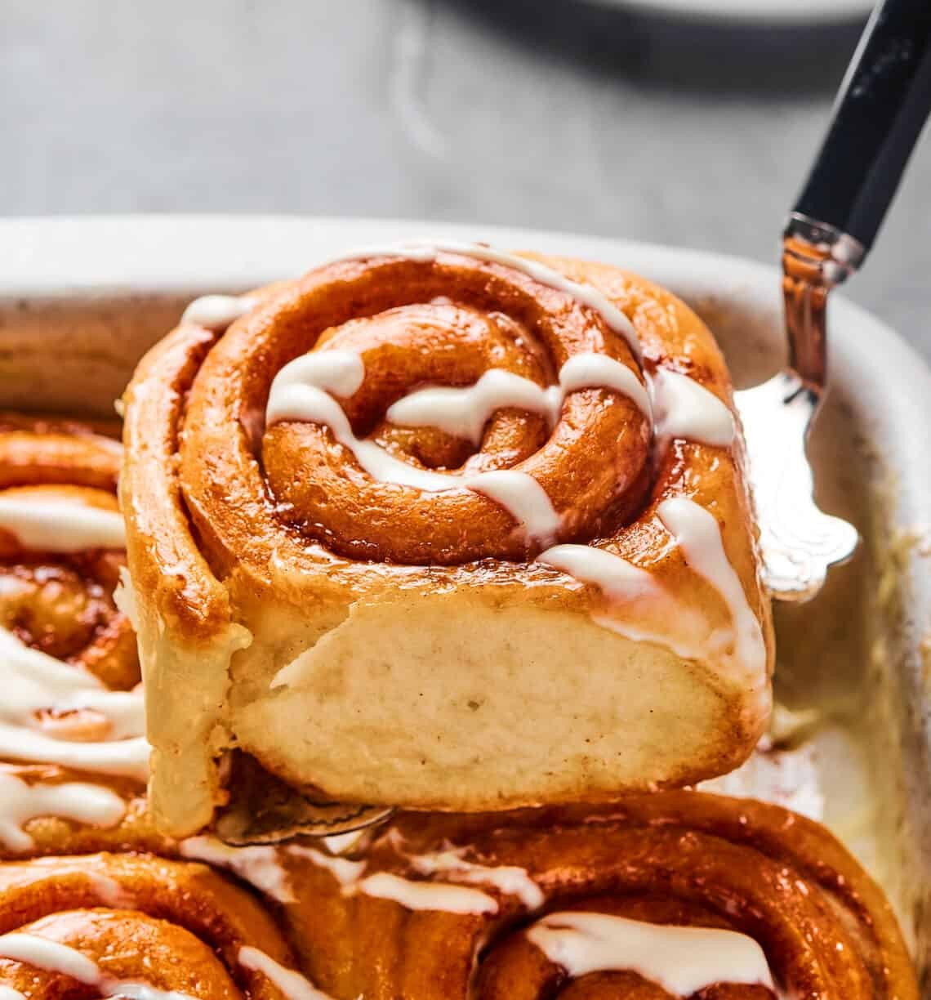
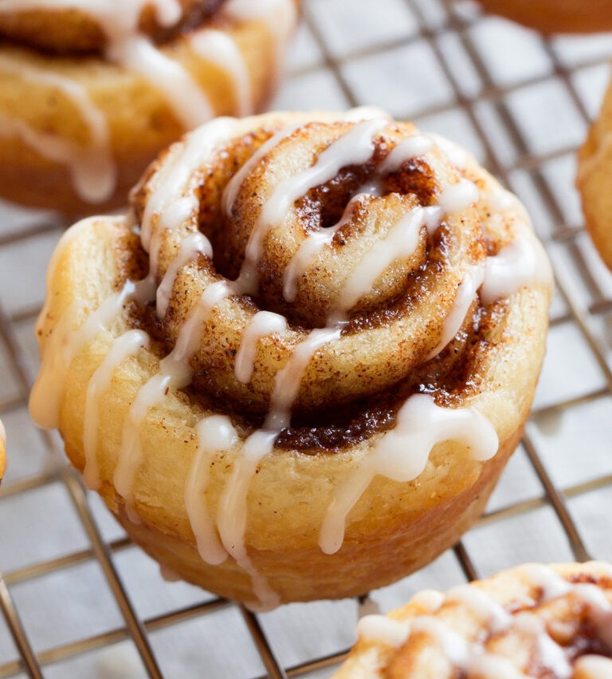

Introduction
Making cinnamon rolls from scratch is a great way to enjoy a warm, sweet treat right out of the oven. With a soft, fluffy dough, swirls of cinnamon, and a creamy icing, these rolls are perfect for breakfast or a delicous snack. The proccess involves mixing ingredients, letting the dough rise, rolling it out with a cinnamon filling, and baking until golden brown. Topped of with a sugary glaze, cinnamon rolls are sure to become you new favourite treat. Heres a quick guide to make your own tasty cinnamon rolls!



Ingredients
Dough
- 1 cup Warm Milk (100-110°F)
- Instant dry yeast (1 tbsp)
- All-purpose flour (3 cups)
- Large egg (1)
- Salt (1 tsp)
- Salted butter (3 tbsp)
- Granulated sugar (2 tbsp)
Filling
- Salted butter melted (3 tbsp)
- Brown sugar (1 cup)
- Ground cinamon (2 tbsp)
Glaze
- Cream cheese (4 ounces)
- Powdered sugar (½ cups)
- Vanilla extract(½ tsp)
- Milk (2 tbsp)
Instructions
- Add 1 cup warm milk, 1 tbsp instant dry yeast, 2 tabsp granulated sugar, 1 tsp salt, 3 tbsp salted butter, 1 large egg and 3 cups all-purpose flour into a mixer on low speed.
- Once the ingredients begin to mix together, change the speed to medium. add flour as needed until no longer sticky, but soft.
- Move the dough to a greased mixing bowl. Cover with a towel and let rise until its doubled in size, about 1 hour.
- Grease a baking sheet or pan. Punch down the dough and roll into preferable rectangle.
- Brush the dough with ½ cup salted butter. In a small bowl, stir together 1 cup brown sugar and 2 tablespoons ground cinnamon. Sprinkle on top of the melted butter.
- Roll up tightly lengthwise so you have one long roll. Use a sharp knife to gently cut the dough into 12 one-inch slices.
- Place the slices onto a greased pan, cover and let rise 30 to 45 minutes.
- Preheat oven to 325°F. Bake the rolls for about 14 minutes, until golden brown.
- While the cinnamon rolls are baking, use a hand mixer to whip together 4 ounces cream cheese and ¼ cup salted butter in a bowl until fluffy.
- Whip in 1 to 1 ½ cups powdered sugar and ½ teaspoon vanilla extract. Add enough milk to achieve a drizzle-like consistency.
- Frost the rolls while still warm. Serve immediately or cool and store.
Done!
And there you have it! Your own soft, sweet and delicious cinnamon rolls, enjoy!!
For more on cinnamon rolls, check out the following websites!